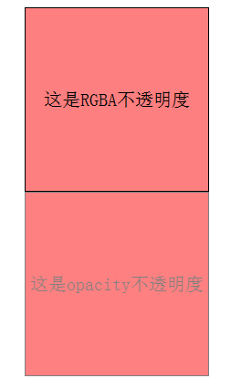

技术分享小课堂
rgba和opacity的透明效果有什么不同？display和visiblity有什么区别？
rgba和opacity的透明效果有什么不同？
在css3以前，我们的css中的颜色都是基于RGB的，都是纯色，但是CSS通过alpha颜色和opacity属性，为我们引入了不透明度和透明度这一全新的概念。
什么是rgba？
R：红色值。正整数 | 百分数
G：绿色值。正整数 | 百分数
B：蓝色值。正整数 | 百分数
A：Alpha透明度。取值0~1之间。
rgba取值
正整数为十进制0~255之间的任意值，百分数为0%~100%之间的任意值。
rgba颜色模型有四个值，最后一个是alpha通道的值，取值在0.0到1.0之间
什么是Opacity？
opacity 设置元素的不透明级别
取值:不透明度，从 0.0 （完全透明）到 1.0（完全不透明）。
对比:rgba()和opacity都能实现透明效果,但最大的不同是opacity作用于元素，以及元素内的所有内容的透明度，而rgba()只作用于元素的颜色或其背景色
说的专业一点：opacity属性的值，可以被其子元素继承。而RGBA设置的元素的后代元素不会继承不透明属性。
我们把opacity和background设置相同的不透明取值看一下效果
opacity=0.5 background设为 rgba(255,0,0,0.5)
RGBA 和Opacity分情况使用
针对以上两种方法的不同特性，我们可以分情况使用两者。例如，当我们需要制作透明的边框时 ，就使用ragb颜色，当我们需要背景图片透明时，需要使用alpha属性
display和visiblity有什么区别？
什么是display？
设置元素按什么样的方式来显示，是按块显示，显示成一条线的形式，显示为“消失”等等
主要取值:block;inline;none
display默认属性值为块级的元素：
什么是visiblity？
设置元素按什么样的方式来显示，是按块显示，显示成一条线的形式，显示为“消失”等等
HTML元素（对象）的宽度、高度等各种属性值都将“丢失”。
display:none与visible:hidden的区别
display:none
不为被隐藏的对象保留其物理空间，即该对象在页面上彻底消失，通俗来说就是看不见也摸不到。
visible:hidden
使对象在网页上不可见，但该对象在网页上所占的空间没有改变，也即是说它仍具有高度、宽度等属性值。通俗来说就是看不见但摸得到。
什么时候使用Visibility或者Display属性？
如果你想隐藏某元素，但在页面上保留该元素的空间的话，你应该使用visibility：hidden。
如果你想在隐藏某元素的同时让其它内容填充空白的话应该使用display：none。
感谢观看
BY : 方兵